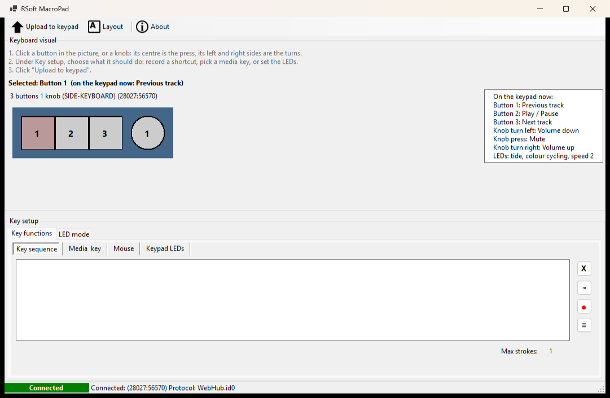

MacroPad: free software for Chinese USB macro keypads with knobs
For the small programmable keypads sold on AliExpress, Amazon, Temu and eBay (1 to 12 keys, one to three volume knobs), often listed as “MINI KeyBoard” or “3 key 1 knob macro keyboard”, and for the SDINNOVATION SIDE-KEYBOARD. Windows 10 and 11, open source (GPL-3.0).
Download for Windows Source on GitHub
What it does
- Put a keyboard shortcut, media key, mouse click or scroll on every key and every knob direction (turn left, press, turn right).
- Shows what the keypad holds right now, and confirms every upload by reading it back (SIDE-KEYBOARD and other WebHub pads).
- Scroll speed: 1 to 10 wheel steps per knob click.
- LED effect, colour, brightness and speed, plus keys that change the keypad's own LEDs.
- The mapping is stored in the keypad. Nothing keeps running on your PC, and the pad works on any computer.
Supported keypads
Find the id in Device Manager → the keypad's “USB Input Device” → Details → Hardware Ids (VID_xxxx&PID_xxxx).
| USB id | Keypad | Protocol |
|---|---|---|
6D7B:DCFA | SDINNOVATION SIDE-KEYBOARD, 3 keys + 1 knob (tested) | WebHub |
1189:8890 | MINI KeyBoard, 3 keys + 1 knob, and a 4-key variant (tested upstream) | Legacy |
1189:8840 | Typewriter-style pad, 6 keys + 2 knobs | Extended |
1189:8830–8833, 1189:8810 | 6, 9 and 12 key pads with 1–3 knobs | Extended |
Questions
- The software that came with my keypad doesn't work or is only in Chinese.
- MacroPad replaces
MINI_KeyBoard.exeand the vendor's browser tools at sdcx-tech.com / huali-tech.com. Check your USB id against the table. - Can the knob change the volume faster?
- Media keys send one step per knob click; the WebHub firmware has no repeat count for them. Scrolling can go faster: 1 to 10 steps per click.
- Can I dim or turn off the LEDs?
- Yes. Choose “Off”, or a single colour with the brightness slider, in the LED tab.
- Mac or Linux?
- MacroPad is Windows-only. On macOS, try Knurl.